Academic qualification
Bachelor of Sociology
Toyo University
- Issued
Graduation certificate and diploma, Faculty of Sociology, Department of International Sociology.
View full-size scan ↗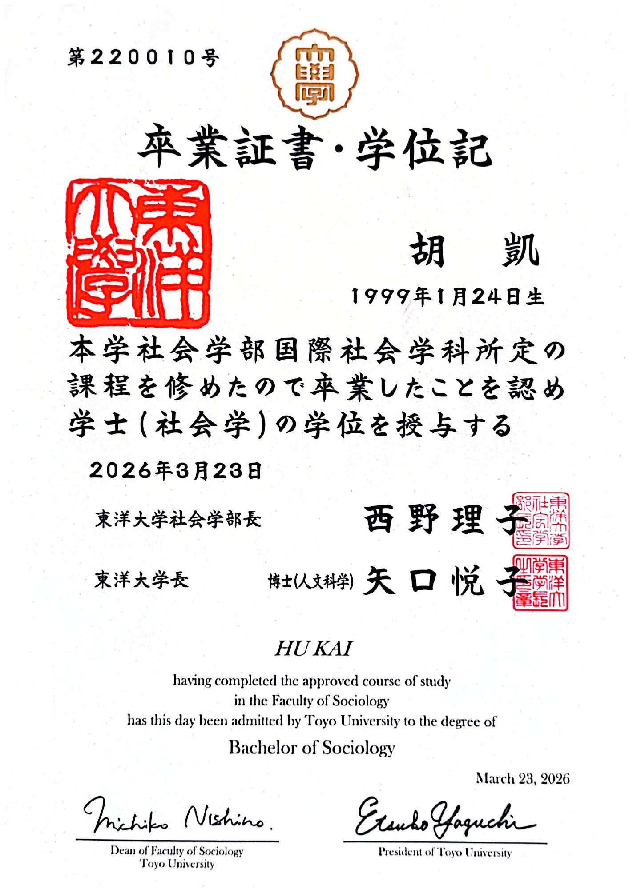
CERTIFICATES & ACHIEVEMENTS ARCHIVE/ 003
Academic qualifications, certifications and language test results, alongside work experience and a study tour during university.
Academic qualification
Toyo University
Graduation certificate and diploma, Faculty of Sociology, Department of International Sociology.
View full-size scan ↗
Certification
Association to Generalize Utilization of Generative AI (GUGA)
Certificate of passing the Generative AI Passport examination.
View full-size scan ↗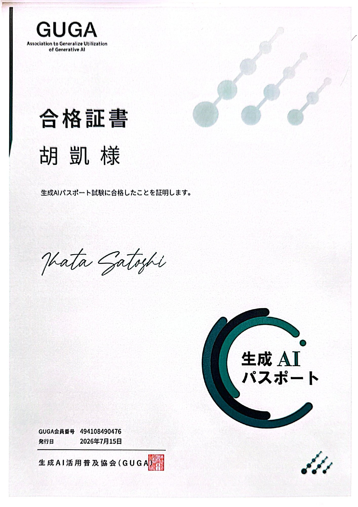
Certification
Amazon Web Services (AWS)
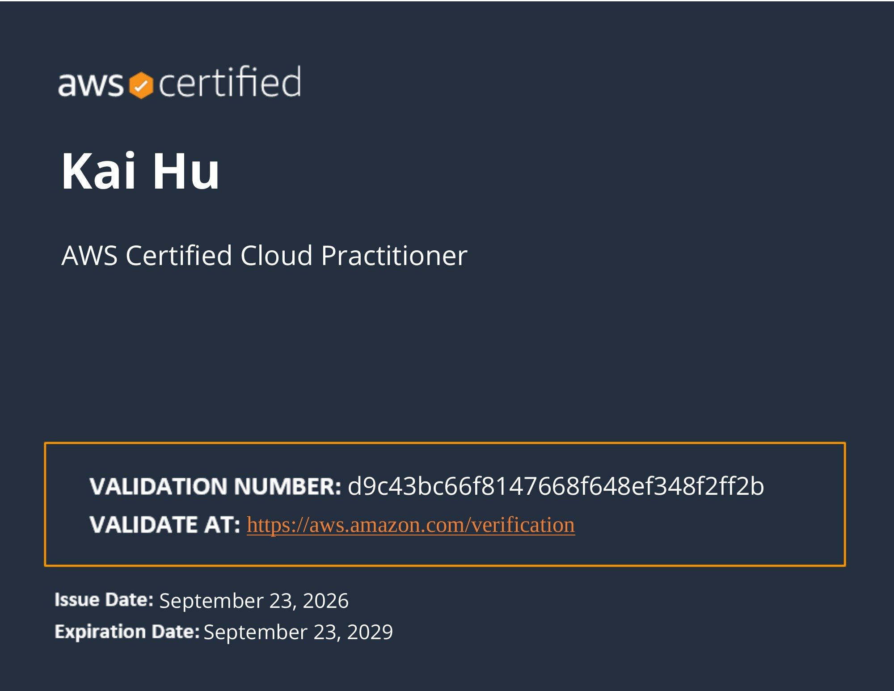
Certification
Amazon Web Services (AWS)
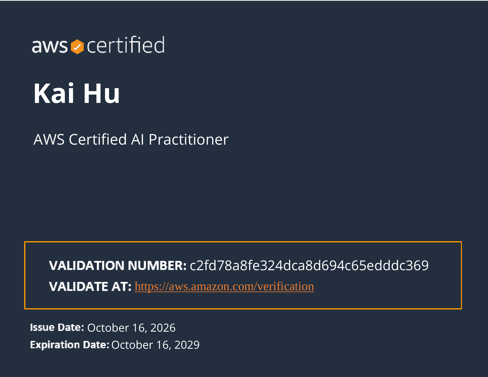
Certification
KINZAI Institute for Financial Affairs, Inc. / Japan Association for Financial Planners (JAFP)
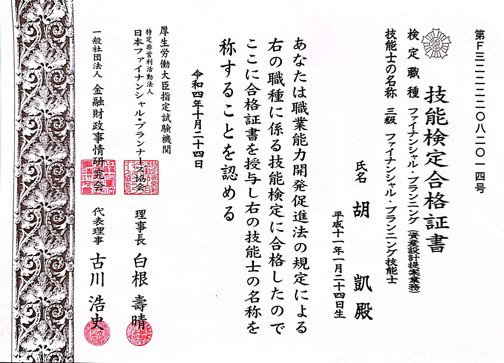
Certification
Osaka Chamber of Commerce and Industry
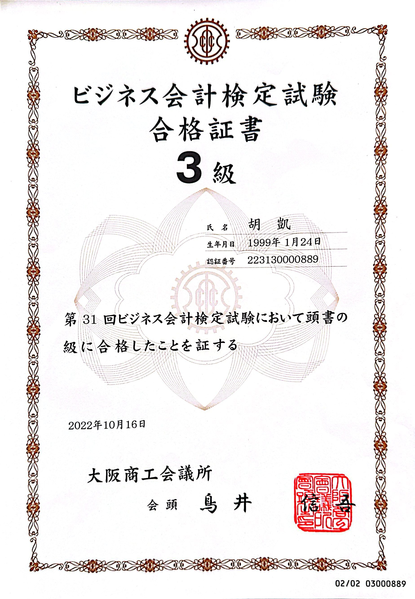
Language test
ETS / IIBC
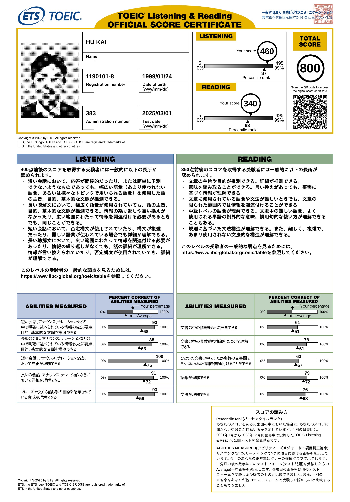
Language test
ETS / IIBC
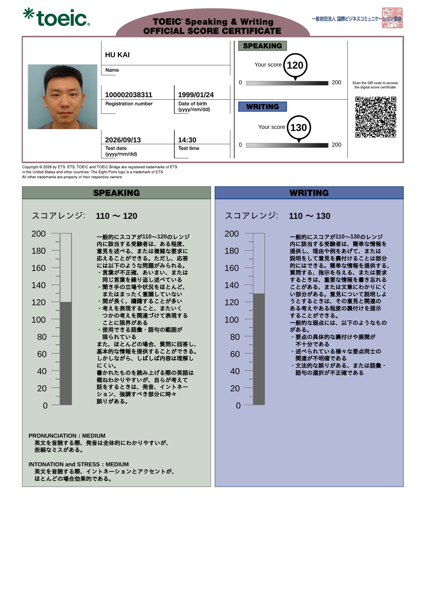
Language test
Japan Educational Exchanges and Services / The Japan Foundation
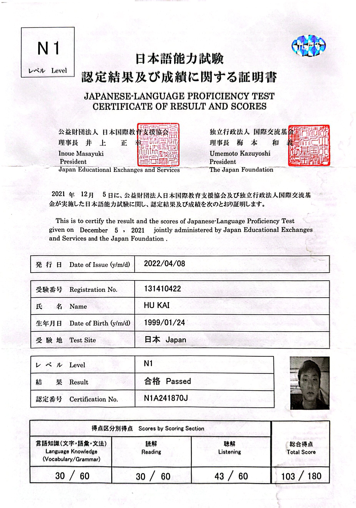
Certification
Innovation Platform Agency, Japan (IPA)
Passed the IT Passport examination in June 2026. Examination result report attached.
View full-size scan ↗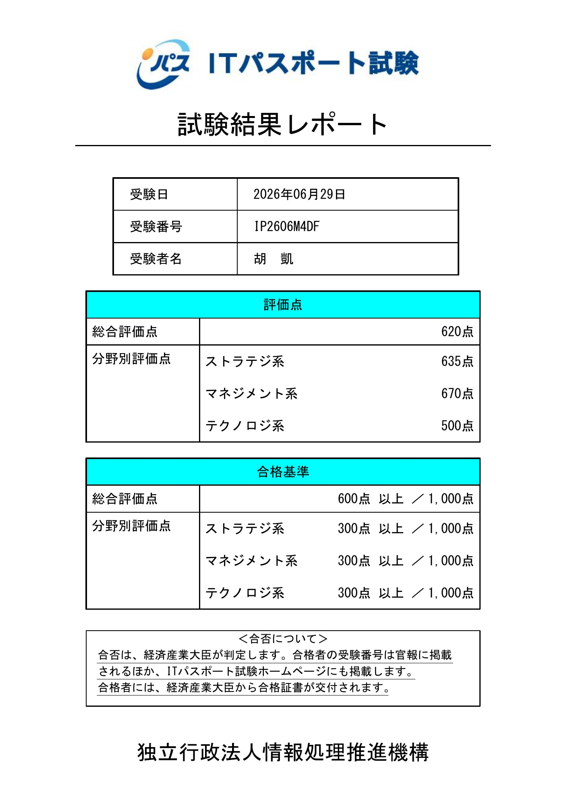
Certification
Nishiwaki Driving School
Obtained a Japanese driving licence in January 2026. Photo of the driving school's graduation commemorative cover.
View full-size photo ↗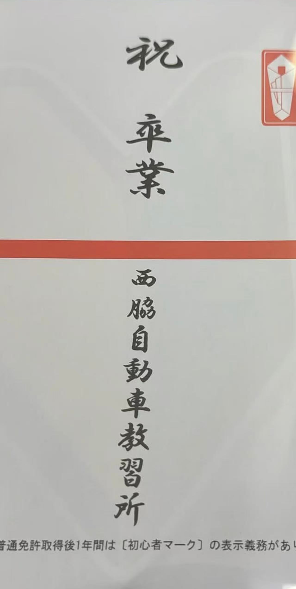
WORK EXPERIENCE · UNIVERSITY YEARS
to
During university, I worked in hotel banquet service and as a busboy from April 2022 to August 2025.
View original photo ↗STUDY TOUR · PAPUA NEW GUINEA
In September 2023, I joined a study tour in Papua New Guinea and visited JICA, the Japan International Cooperation Agency, with my group members for learning and exchange.
View original photo ↗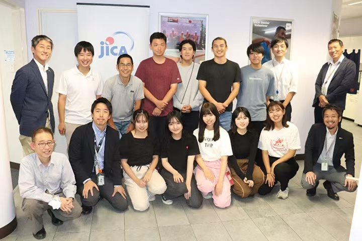
MODDING ACHIEVEMENT · NEXUS MODS
In September 2026, my mods reached 1,000 total downloads, earning me Mod Author status and an author badge on my Nexus Mods profile.
View achievement screenshot ↗ View my Nexus Mods profile ↗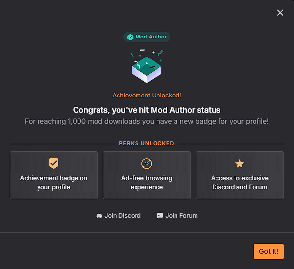
FIELDWORK · TOKYO–YOKOHAMA
During a Tokyo–Yokohama fieldwork program organized by Toyo University, I visited Tokyo Camii in Yoyogi. Through the staff's welcoming explanations, I learned about the daily lives and culture of Muslims in Japan.
View original photo ↗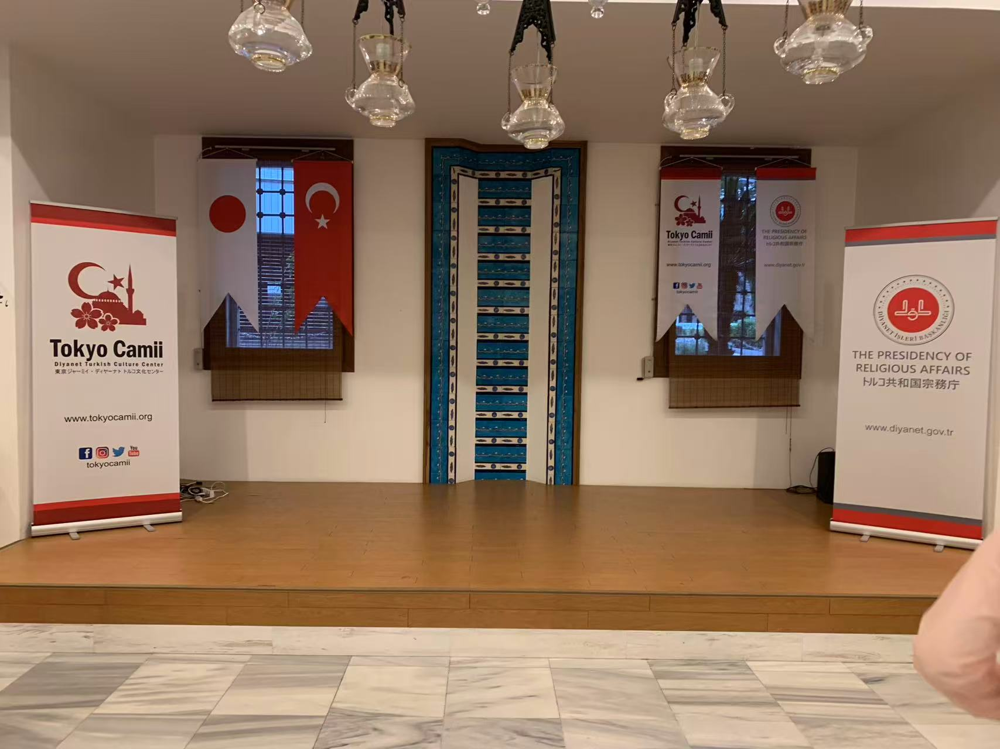
INTERNSHIP · GUANGDONG, CHINA
In February 2024, I interned at a copper raw materials retailer in Guangdong, China. I learned to use Microsoft Word and Excel, gained customer service experience, and developed practical cutting-machine operation skills.
View original photo ↗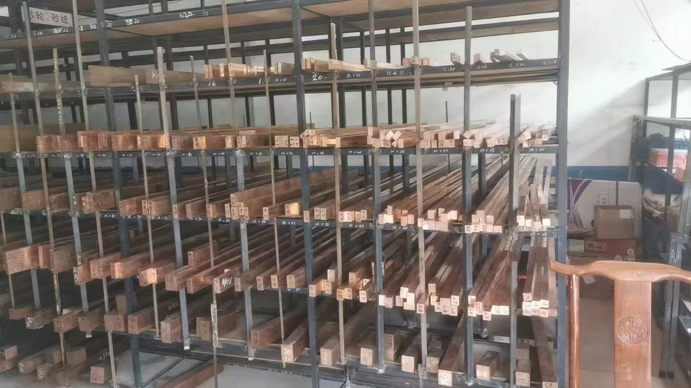